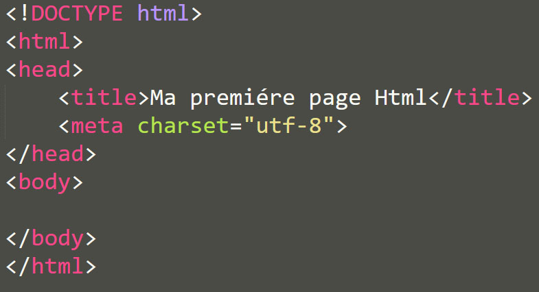
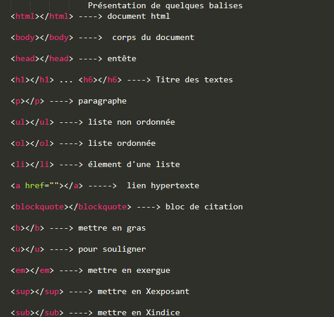

Historique
HTML 1.0
HTML 2.0
HTML 3.0
HTML 3.2
HTML 4.01
XHTML 1.0
HTML5
Comment et Pourquoi utiliser HTML ?
normes et spécifications sont amenés pour permettre la création plus facile des sites plus jolies et plus
efficaces. Commençons par le début...
d'un site Web à l'époque, et la langue est très limitatives. Il était vraiment on ne pouvait
pas faire grand-chose avec elle barre obtenir un texte simple, sur le web. Mais alors, juste
que les beardos obtenu un foamin' retour dans la journée.
nouvelles fonctionnalités au mélange. »HTML 2.0 est la norme pour la conception de site Web
jusqu'à Janvier 1997 et défini nombreuses fonctionnalités HTML de base pour la première fois.
normes précédentes offraient des capacités décentes aux webmasters (comme on les appelait), ils
avaient soif plus de capacités et des étiquettes. Ils voulaient améliorer l'apparence de leurs sites.
Pour apaiser les cris des auteurs HTML, ils ont introduit de nouvelles balises propriétaires et
attributs dans leur navigateur Netscape Navigator. Ces nouvelles capacités ont été appelées balises
d'extension Netscape .
évident que la norme devait être trouvée. A cette fin, le »World Wide Web Consortium ( en abrégé
du W3C ) a été fondée en 1994 pour normaliser la langue et le garder en pleine évolution dans
la bonne direction. Leur premier travail était le nom de code WILBUR , et est devenu plus
tard connu sous le nom »HTML 3.2 .
début du développement , il avait le nom de code COUGAR . La plupart des nouvelles
fonctionnalités apporté cette fois -ci est de la spécification HTML 3.0 infortunée, ainsi qu'une
multitude de garnitures sur les vieilles étiquettes, mettant l'accent sur l' internationalisation
et de soutien pour les nouvelles soutenant le langage HTML de présentation,
en cascade des feuilles de style .
recommandation . Depuis le 26 Janvier, 2000 , il se présente comme le standard commun avec
HTML 4.01. XHTML marque un départ de la façon dont les nouvelles spécifications ont travaillé
- il est une toute nouvelle branche de HTML, intégrant les rigueurs de »XML , de sorte que le
code doit être correctement écrit si elle est au travail une fois qu'il atteint le navigateur du
lecteur.
Après HTML 4.01 et XHTML 1.0, les gars qui étaient dans le contrôle du obtenu de direction de
HTML laisser distraire à travailler sur une nouvelle proposition de XHTML 2. En même temps, les
développeurs web intelligents ont été innovent en permanence, le piratage de nouvelles
fonctionnalités dans les sites Web et les navigateurs. Le chemin que XHTML 2 a commencé à
regarder prenant à la fois ennuyeux et peu réaliste , et il est devenu assez clair qu'une
nouvelle approche était nécessaire.
Il était à cette époque qu'un groupe de fans de technologie web pragmatique, les programmeurs
navigateur et rédacteurs de devis a commencé à construire quelque chose de leur propre, en dehors
des procédures habituelles du W3C. Ils se sont appelés le Groupe de travail de la technologie
Web Hypertext Application ( WHATWG ), et mis au point une nouvelle spécification. Après un
examen de conscience, le W3C a décidé que le HTML était encore l'avenir du web. XHTML 2 a été
interrompue et HTML5 est devenu la nouvelle spécification qui devrait être versé l'effort de
tout le monde dans.
Markup Language) est un langage descriptif utilisé pour structurer le contenu d'une page (ses textes,
ses images, ses liens, etc.). Un document HTML est un fichier texte qui contient des balises (ou
tag en anglais).

Structure de base de HTML
Présentation de quelques balises
Ces balises doivent être utilisées d'une certaine façon pour décrire correctement la structure du
document. Les balises indiquent au navigateur comment afficher le document, certaines balises
permettent d'intégrer différents médias comme des images, des vidéos ou des musiques parmi le texte
de la page.
Le navigateur n'affiche pas les balises telles quelles. Lorsqu'un utilisateur visite une page web,
son navigateur analyse (ou parse en anglais) le document et l'interprète afin d'afficher la page
web correctement. Par exemple, si le document contient une balise img, le navigateur chargera
l'image associée et affichera l'image à la place de la balise HTML.


L’histoire du HTML a été marquée par la concurrence de nombreux navigateurs. Si Internet Explorer en a
été dans un premier temps le leader incontesté, Netscape, Firefox, Safari et Opera, parmi d’autres,
sont venus grignoter son périmètre et imposer petit à petit leur empreinte sur le langage. De
nombreuses fonctions propres à chacun de ces browsers sont venues envahir le langage, créant de
réguliers problèmes de compatibilité. HTML5 met un terme à cette époque, chaque éditeur s’étant réuni
autour du nouveau standard, libre de surcroît.
Plus besoin donc, de truffer sa page de tests et de contournements pour que celle-ci s’affiche
correctement quelle que soit sa destination.
Le contenu interactif, animations, vidéos et son ont longtemps été un aspect particulièrement pénible à
gérer par le développeur, en forçant celui-ci à faire appel à de nombreux plugins, et en l’exposant
aux problèmes de compatibilité entre navigateurs ou systèmes. HTML5 dispose nativement des
technologies permettant de créer des animations, de diffuser des vidéos ou de la musique. Créer un jeu
en ligne grâce à HTML5 est par exemple aujourd’hui totalement possible sans installer de librairies
supplémentaires. Il en va de même pour la création de bannières publicitaires.
C’est une réelle révolution dans le monde du développement !
-
Le langage HTML n'est pas assez complet, Mélange entre la présentation et le contenu
- Sa structure distribuée (liens externes) rend difficile le stockage; on risque de perdre ou
d'oublier un élément lié sans s'en rendre compte. - Le stockage d'une page représente en général plusieurs fichiers.
- Les possibilités de mise en forme sont limitées et parfois complexes à mettre en oeuvre (Frames).
- HTML prend vraiment tout son sens dans un environnement réseau connecté à Internet.Ce n'est pas (encore ?) le cas partout.

Le langage de balisage HTML permet de structurer un document et de le mettre en forme. Cependant, ce langage
utilisé intensément par les sites internet tend à devenir exclusivement un langage de structuration en se
rapprochant du format XML, laissant la mise en forme aux feuilles de styles en cascade (CSS), et les
animations au JavaScript.
Afin de protéger le code et lui permettre une plus grande interactivité entre l'utilisateur et les bases de
données, le PHP est de plus en plus employé avec l'HTML.